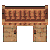
large 64px · ink 0.55
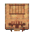
medium 48px · ink 0.557
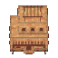
large 64px · ink 0.517
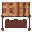
small 32px · ink 0.635
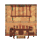
medium 48px · ink 0.581
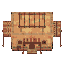
large 64px · ink 0.478
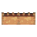
medium 48px · ink 0.294
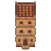
large 64px · ink 0.358
small 32px · ink 0.488
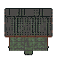
large 64px · ink 0.608
medium 48px · ink 0.495
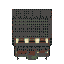
large 64px · ink 0.467
small 32px · ink 0.494
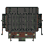
large 64px · ink 0.589
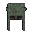
small 32px · ink 0.37
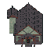
large 64px · ink 0.486
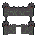
large 64px · ink 0.479
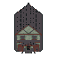
large 64px · ink 0.379
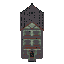
large 64px · ink 0.289
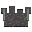
small 32px · ink 0.477
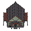
large 64px · ink 0.484
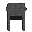
small 32px · ink 0.37
medium 48px · ink 0.294
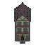
large 64px · ink 0.289
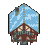
medium 48px · ink 0.466
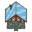
large 64px · ink 0.493
medium 48px · ink 0.466
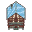
large 64px · ink 0.435
medium 48px · ink 0.466
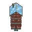
large 64px · ink 0.295
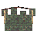
medium 48px · ink 0.463
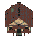
large 64px · ink 0.531
small 32px · ink 0.494
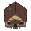
large 64px · ink 0.532
small 32px · ink 0.594
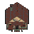
medium 48px · ink 0.503
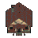
medium 48px · ink 0.501
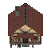
large 64px · ink 0.491
small 32px · ink 0.594
small 32px · ink 0.494
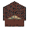
medium 48px · ink 0.583
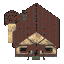
large 64px · ink 0.591
small 32px · ink 0.492
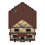
large 64px · ink 0.469
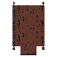
large 64px · ink 0.456
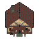
large 64px · ink 0.532
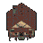
medium 48px · ink 0.504
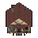
medium 48px · ink 0.502
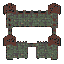
large 64px · ink 0.507
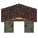
large 64px · ink 0.522
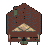
medium 48px · ink 0.532
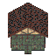
large 64px · ink 0.537
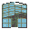
small 32px · ink 0.741
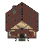
large 64px · ink 0.531
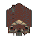
medium 48px · ink 0.473
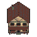
large 64px · ink 0.468
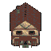
large 64px · ink 0.46
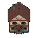
large 64px · ink 0.417
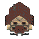
large 64px · ink 0.459
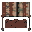
small 32px · ink 0.635
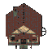
large 64px · ink 0.499
small 32px · ink 0.542
large 64px · ink 0.582
small 32px · ink 0.494
medium 48px · ink 0.503
small 32px · ink 0.5
large 64px · ink 0.56
large 64px · ink 0.537
large 64px · ink 0.482
medium 48px · ink 0.294
large 64px · ink 0.32
medium 48px · ink 0.501
small 32px · ink 0.523
large 64px · ink 0.456
large 64px · ink 0.505
large 64px · ink 0.537
medium 48px · ink 0.524
large 64px · ink 0.478
small 32px · ink 0.635
medium 48px · ink 0.523
medium 48px · ink 0.463
large 64px · ink 0.592
small 32px · ink 0.576
large 64px · ink 0.593
small 32px · ink 0.602
medium 48px · ink 0.558
medium 48px · ink 0.558
large 64px · ink 0.564
small 32px · ink 0.602
small 32px · ink 0.576
medium 48px · ink 0.584
large 64px · ink 0.578
small 32px · ink 0.477
large 64px · ink 0.515
large 64px · ink 0.456
large 64px · ink 0.592
medium 48px · ink 0.55
medium 48px · ink 0.559
large 64px · ink 0.494
large 64px · ink 0.477
medium 48px · ink 0.587
large 64px · ink 0.543
small 32px · ink 0.741
large 64px · ink 0.591
medium 48px · ink 0.61
large 64px · ink 0.522
large 64px · ink 0.504
large 64px · ink 0.453
large 64px · ink 0.493
small 32px · ink 0.635
large 64px · ink 0.565
small 32px · ink 0.58
large 64px · ink 0.586
small 32px · ink 0.576
medium 48px · ink 0.558
small 32px · ink 0.584
large 64px · ink 0.477
large 64px · ink 0.602
large 64px · ink 0.546
medium 48px · ink 0.294
large 64px · ink 0.322
medium 48px · ink 0.558
medium 48px · ink 0.466
large 64px · ink 0.513
medium 48px · ink 0.466
large 64px · ink 0.435
large 64px · ink 0.523
medium 48px · ink 0.466
large 64px · ink 0.495
large 64px · ink 0.295